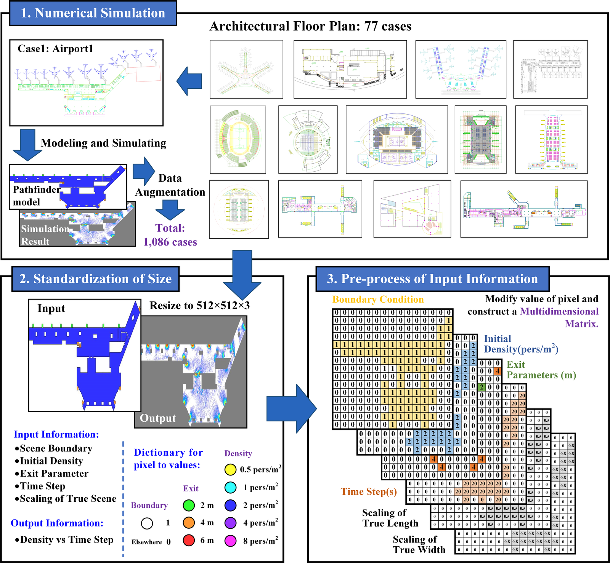

Department of Building Environment and Energy Engineering, The Hong Kong Polytechnic University
Department of Civil Engineering, Tsinghua University
With the increasing height and complexity of modern buildings, safe evacuation in fire emergencies becomes more challenging. The required safe egress time (RSET) helps evaluate building fire-safety performance, but its quantification relies on costly computational simulations. This study proposes a deep-learning method to rapidly quantify RSET and support fire-evacuation assessment. We first built a database of 1,068 evacuation simulations in buildings such as stadiums and airport terminals with different occupancy distributions. A model based on generative adversarial networks (GAN) is trained on inputs of building floor plan, initial occupant distribution, and exit capacity, with outputs of spatiotemporal occupant-density fields.
Spatiotemporal occupant-density evolution predicted by the GAN surrogate model.
Handling varying occupant densities across connected and disconnected regions.
End-to-end RSET quantification for a complex building layout.

Data preprocessing pipeline: floor-plan encoding, occupant distribution, and exit-capacity representation feeding the deep-learning model.